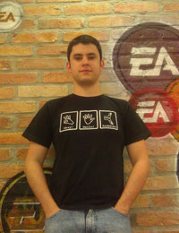

LUCAS SAITO
Estudante, 17 anos, começou a se interessar pela programação aos 15 e desde então vem se interessando cada vez mais nesta área. Pretende seguir carreira em informática, e aprendeu bastante com a internet e cursos específicos, assim como na ETEC.

MARCELO NICOLOSI
Formado em Desenvolvimento de Jogos Digitais, nunca se deu muito bem com programação sempre se interessou pelo Design desde a época da Universidade, onde criava histórias, personagens e cenários. Agora tenta trazer para a web todas as idéais malucas que sempre teve para os jogos. Um exemplo disso é o layout do site da LPS4 que usa cerebros para referenciar idéias e criatividade mas também lembra "zumbis" um de seus temas preferidos para jogos e filmes.